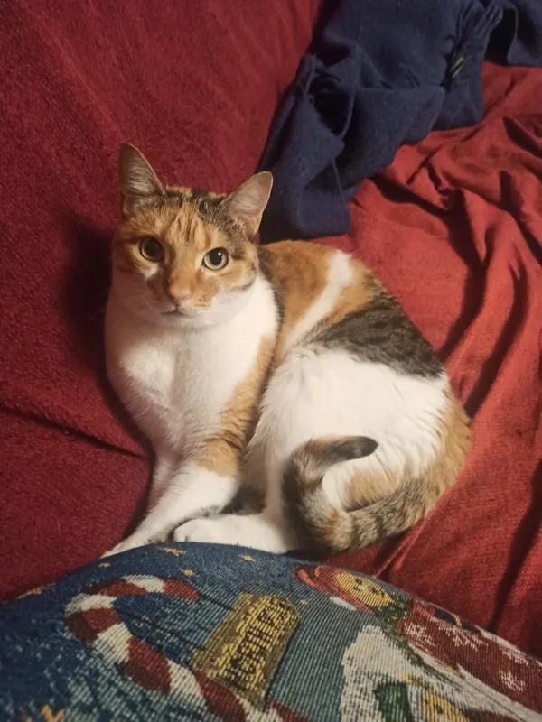
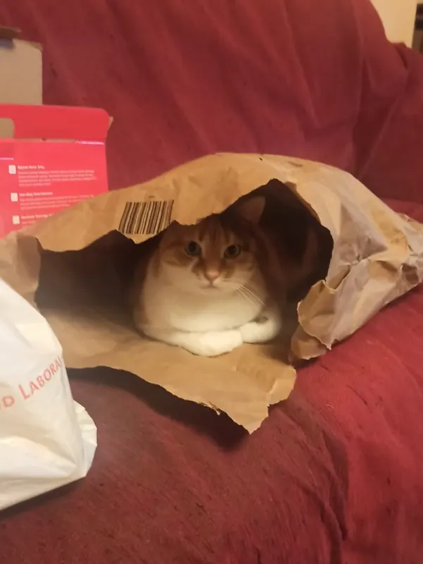
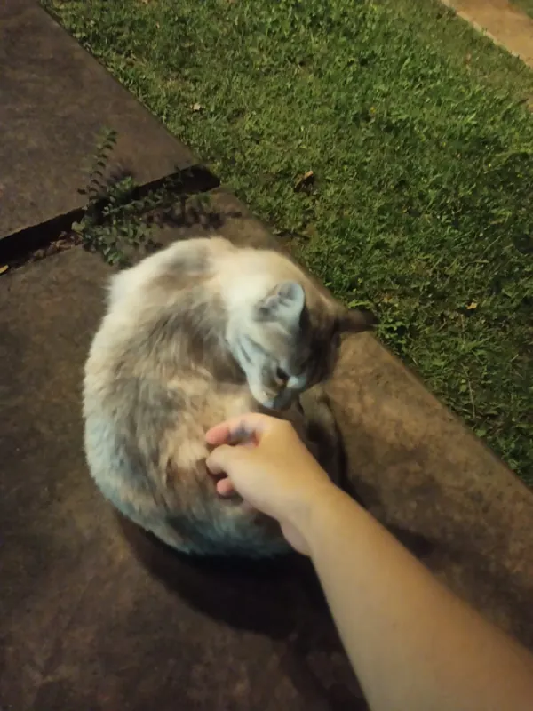

// en casa
Mi gata
Vivo con una gata tricolor que tiene muy claro quién manda en casa. La foto del suelo es de justo después de reventar una bolsa de castañas: ni un gramo de arrepentimiento.
Y no es solo ella: si me cruzo con un gato por la calle, me paro a saludarlo. Los dos de las fotos eran de los majos.
$ cat gata.json
{
"rol": "jefa de la casa",
"antecedentes": ["bolsa de castañas"],
"arrepentimiento": null
}